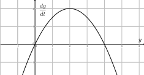
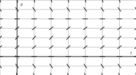
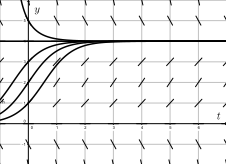

Section 2.4 Sean Fitzpatrick's Hello
Hi all! I'm curious to see where this project is heading!
Subsection 2.4.1 An example activity.
Content of the subsection.
More content. And for no particular reason, a completely unrelated video.
Activity 4.
Consider the autonomous differential equation
-
Make a plot of \(\frac{dy}{dt}\) versus \(y\) on the axes provided in Figure 2.4.1. Looking at the graph, for what values of \(y\) does \(y\) increase and for what values of \(y\) does \(y\) decrease?

Figure 2.4.1. Axes for plotting \(dy/dt\) vs \(y\) for \(\frac{dy}{dt} = -\frac 12 y(y-4)\text{.}\) 
Figure 2.4.2. Axes for plotting the slope field for \(\frac{dy}{dt} = -\frac 12 y(y-4)\text{.}\) Identify any equilibrium solutions of the given differential equation.
Now sketch the slope field for the given differential equation on the axes provided in Figure 2.4.2.
Sketch the solutions to the given differential equation that correspond to initial values \(y(0)=-1, 0, 1, \ldots, 5\text{.}\)
An equilibrium solution \(\overline{y}\) is called stable if nearby solutions converge to \(\overline{y}\text{.}\) This means that if the initial condition varies slightly from \(\overline{y}\text{,}\) then \(\lim_{t\to\infty}y(t) = \overline{y}\text{.}\) Conversely, an equilibrium solution \(\overline{y}\) is called unstable if nearby solutions are pushed away from \(\overline{y}\text{.}\) Using your work above, classify the equilibrium solutions you found in (b) as either stable or unstable.
Suppose that \(y(t)\) describes the population of a species of living organisms and that the initial value \(y(0)\) is positive. What can you say about the eventual fate of this population?
Now consider a general autonomous differential equation of the form \(dy/dt = f(y)\text{.}\) Remember that an equilibrium solution \(\overline{y}\) satisfies \(f(\overline{y}) = 0\text{.}\) If we graph \(dy/dt = f(y)\) as a function of \(y\text{,}\) for which of the differential equations represented in Figure 2.4.3 and Figure 2.4.4 is \(\overline{y}\) a stable equilibrium and for which is \(\overline{y}\) unstable? Why?


-
When \(y \lt 0\) and when \(y \gt 4\text{,}\) \(y\) is a decreasing function of \(t\text{.}\) When \(0 \lt y \lt 4\text{,}\) \(y\) is a increasing function of \(t\text{.}\)
 \(y = 0\) and \(y = 4\text{.}\)
- 
- 
\(y = 4\) is stable; \(y = 0\) is unstable.
Tend to 4.
Figure 2.4.3 is for an ustable equilibrium; Figure 2.4.4 is for a stable equilibrium.
-
The graph below is a plot of \(\frac{dy}{dt}\) versus \(y\text{.}\) We see that when \(y \lt 0\) and when \(y \gt 4\text{,}\) \(\frac{dy}{dt} \lt 0\) and hence \(y\) is a decreasing function of \(t\text{.}\) We also see that when \(0 \lt y \lt 4\text{,}\) \(\frac{dy}{dt} \gt 0\) and hence \(y\) is a increasing function of \(t\text{.}\)
The equilibrium solutions occur when \(\frac{dy}{dt} = 0\) and so the equilibrium solutions are \(y = 0\) and \(y = 4\text{.}\)
-
Following is a slope field for the differential equation \(\frac{dy}{dt} = -\frac{1}{2}y(y - 4)\text{.}\)
-
Below is the slope field for the differential equation \(\frac{dy}{dt} = -\frac{1}{2}y(y - 4)\) along with solutions that satisfy \(y(0) = 1\text{,}\) \(y(0) = 2\text{,}\) \(y(0) = 3\text{,}\) \(y(0) = 4\text{,}\) and \(y(0) = 5\text{.}\)
The equilibrium solution \(y = 4\) is stable because trajectories nearby approach this constant solution, while the equilibrium solution \(y = 0\) is unstable because trajectories nearby veer away from this constant solution.
The population will eventually tend to 4.
Figure 2.4.3 is for an ustable equilibrium. This is because if \(y\) is slightly less than \(\bar{y}\text{,}\) then \(\frac{dy}{dt} \lt 0\) and the function \(y(t)\) will be decreasing. In addition, if \(y\) is slightly greater than \(\bar{y}\text{,}\) then \(\frac{dy}{dt} \gt 0\) and the function \(y(t)\) will be increasing. In both situations, \(y(t)\) is “moving away from” \(\bar{y}\text{.}\) Figure 2.4.4 is for a stable equilibrium. This is because if \(y\) is slightly less than \(\bar{y}\text{,}\) then \(\frac{dy}{dt} \gt 0\) and the function \(y(t)\) will be increasing. In addition, if \(y\) is slightly greater than \(\bar{y}\text{,}\) then \(\frac{dy}{dt} \lt 0\) and the function \(y(t)\) will be decreasing. In both situations, \(y(t)\) is “moving toward” \(\bar{y}\text{.}\)